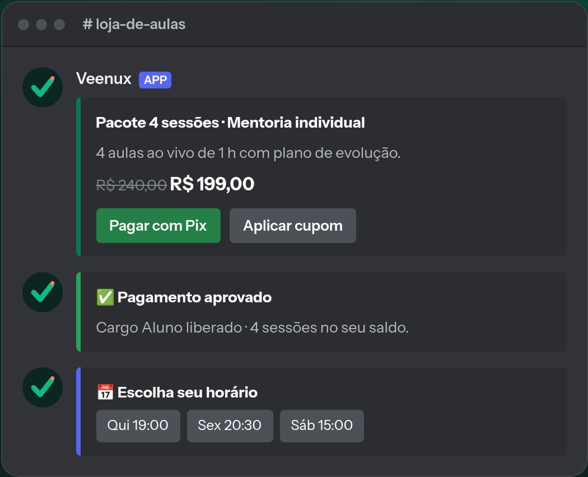
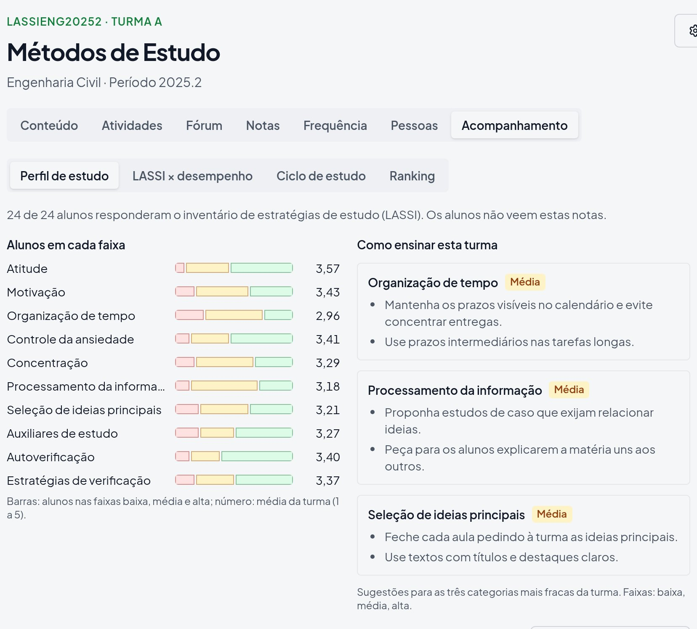

Programador
Código em produção
- Java em um sistema usado por empresas
- Dois produtos meus no ar, com usuários
- Pagamentos, IA e painéis
Aberto a vagas CLT · remoto ou híbrido no Paraná
> Desenvolvedor Full Stack · Java e TypeScript
Em dois anos, fui de bolsista de pesquisa a desenvolvedor em empresa, com dois produtos meus no ar e uma empresa júnior fundada. Programo, estudo, empreendo e lidero.
Programador
Acadêmico
Empreendedor
Líder
Desenvolvo e mantenho, em time, um sistema de gestão eletrônica de documentos em Java usado por empresas. Também gravo os tutoriais em vídeo do produto.
Plataforma em que coaches vendem aulas dentro do Discord. Cuido de tudo sozinho: produto, código, cobrança e suporte.
Ajudei na organização e nas decisões do evento e ministrei duas oficinas de segurança da informação.
45 membros e 7 diretores, mais de R$ 10 mil faturados no primeiro ano e os prêmios EJ Iniciativa (Vértice 2025) e EJ Aspirante (Vendaval 2025).
Liderei a equipe de organização, trouxe palestrantes, fechei patrocínios e parcerias e montei a programação e a divulgação. Mediei a palestra de Julien Decultot, CFO da LVMH.
Plataforma de ensino que entende como cada aluno estuda e ajuda o professor a se adaptar à turma.
Solução construída em equipe, sob pressão de tempo.
Sistemas web e sites para clientes na TriXX Software e na DNS Agência, em trabalho remoto.
Projeto Transformar: aparelhos apreendidos pela Receita Federal viraram computadores para escolas sem recursos.
Primeira competição de programação em equipe.
Os dois produtos que construí sozinho e que estão no ar, e o código que deixo aberto.

No ar · clientes reais
Coaches de e-sports vendem aulas dentro do Discord: loja com Pix e cartão, agenda com lembretes e remarcação, área do aluno e suporte com IA. Virou um negócio, com teste grátis e cobrança mensal.
Conhecer o produtoO que dizem os clientes
“Também quero destacar o trabalho do Vitor, meu aluno e desenvolvedor do bot. É muito gratificante ver a dedicação dele e a qualidade do projeto.”
“Eu não entendo nada de bots e integrações do Discord, então eu só dava as ideias e ele implementava dando sugestões pra melhorar mais ainda. Recomendo demais, pode confiar!”

Meu TCC · no ar
Plataforma de ensino que descobre como cada aluno estuda, monta um plano para ele e mostra ao professor onde a turma precisa de ajuda, com sugestões de como ensinar. Pronta para várias escolas e faculdades.
Pedir uma demonstraçãoCódigo privado.
Para quem quer ver como eu programo e explico.
Câmpus Francisco Beltrão · previsão de formatura: 2º semestre de 2028
Pergunto antes de codar, aviso cedo quando algo trava e deixo as decisões registradas para o time.
Testo e reviso o que entrego antes de subir. Erro corrigido vira teste, para não voltar.
Já levei produtos inteiros do zero ao ar sozinho. No time, assumo a minha parte até o fim.
Uso agentes de IA com método para ganhar velocidade, sem abrir mão de entender e revisar o que vai para produção.
“Meu Deus! Um minuto inteiro de felicidade! Será isso pouco, ainda que para toda a vida de um homem?”
Sou o Vitor, de Francisco Beltrão, no Paraná. Sou movido por desafios e pela vontade de construir coisas que gerem impacto real, e acredito na colaboração e na liderança com propósito. Fora do código, estudo matemática, história, política e filosofia, leio bastante e vivo criando mods e plugins para jogos.
Procurando alguém para o seu time? Fale comigo pelo canal que preferir. Respondo com o currículo e o que mais você precisar.